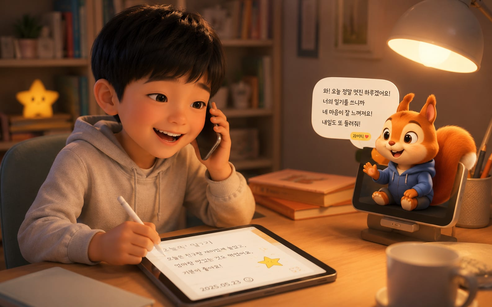
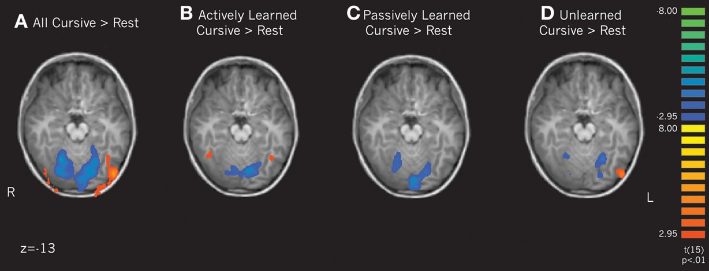
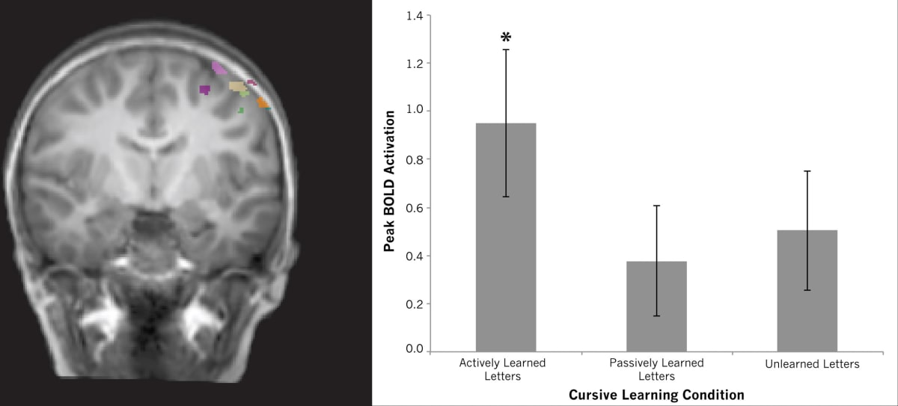
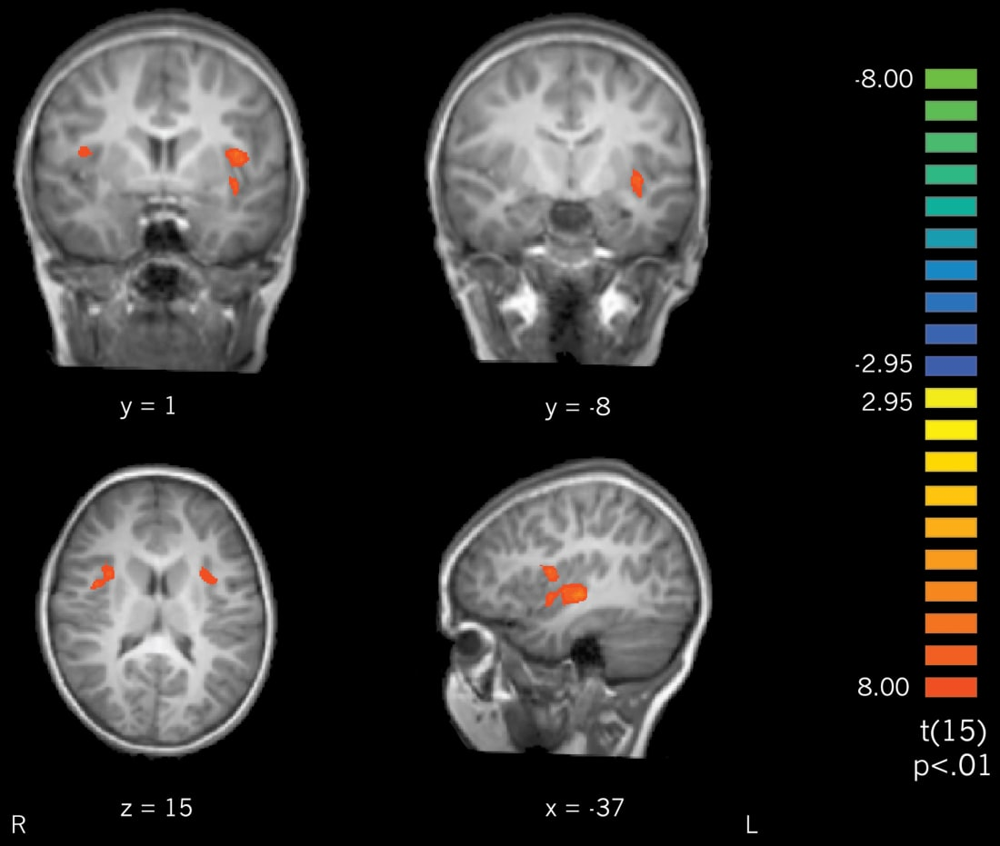
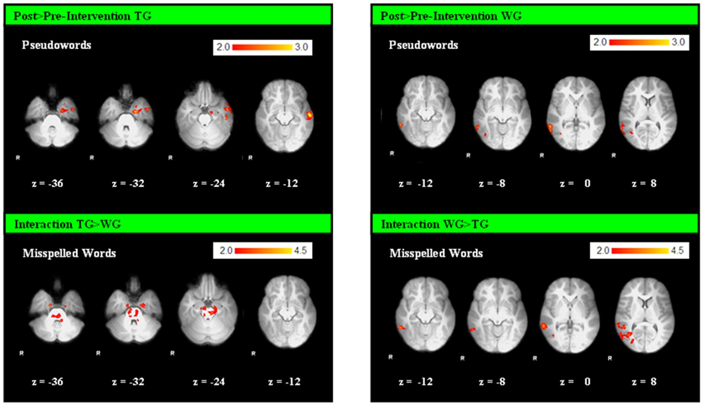

라이티가 하루 한 번 문자를 보냅니다.
대화 직후, 아이가 직접 하루를 손글씨로 남깁니다.
“오늘 있었던 일 통화하자!”
무슨 일 있었냐 물어도
울기만 하는 아이
어린이집에서, 학교에서 오늘 무슨 일이 있었는지 물어도 앞에서 울기만 할 때.
답답하고, 또 걱정되셨을 거예요.
말하기 싫은 게 아니라,
아직 꺼내는 법을 모를 뿐이에요.
라이티랑 통화하다 보면
일기가 저절로 써져요
울던 아이가 신나서 오늘 이야기를 꺼내요.
그 이야기가 그대로 오늘 일기가 됩니다.

근거 위에 만듭니다
재미있게만 만들지 않았어요.
쌓인 연구가 가리키는 쪽으로 만들었습니다.
손으로 써야 뇌가 켜집니다




출처: Kersey & James (2013), Frontiers in Psychology 4:567 (Fig. 4·8·6) · Gebauer 외 (2012), PLOS ONE 7:e38201 (Fig. 5) — 모두 CC BY, 원문1 · 원문2 (형식·크기 조정). 아동 fMRI 연구들이며, 피어라를 검증한 것이 아니라 설계가 따른 원리를 보여줍니다.
도우며 쓴 그룹이 약 2배 더 늘었어요
도움받으며 쓴 그룹은 대조군보다 글쓰기 점수가 약 두 배 더 향상됐어요. 다른 연구에서도 도우면 덜 힘들게(인지부하 ↓) 더 잘 썼습니다.
데이터 출처: Li (2023) · Jiang & Kalyuga (2022), Frontiers in Psychology — 실제 보고된 수치로 구성한 그래프입니다. 피어라를 검증한 것이 아니라 설계가 따른 원리를 보여줍니다.
※ 위 연구들은 피어라를 검증한 것이 아닙니다. 피어라가 어떤 원리를 따라 설계됐는지를 밝히는 근거입니다. 피어라는 아직 출시 전이며, 저희 앱의 학습 효과는 검증된 바 없습니다. 확인되지 않은 효과를 약속드리지 않겠습니다. 슬라이드의 인물 사진은 AI로 만든 가상 인물이며, 실존 인물이나 해당 연구의 연구자가 아닙니다.
말한 마음이
글이 되기까지
쓰기를 가르치기 전에,
쓰고 싶은 이야기부터 만들어 줍니다.
문자를 받고,
전화를 걸어요
하루 한 통, 라이티가 문자를 보내요.
궁금해진 아이가 먼저 전화를 겁니다.
태블릿에
손으로 써요
통화에서 꺼낸 이야기가 글감이 돼요.
막히면 "이거 어떻게 써?" 하고 물어봐요.
처음엔 무서웠는데 재미있써서 또 타고싶다.
봐주고,
다시 써요
잘한 건 확실히 칭찬하고,
주의할 곳만 살짝 짚어줘요.
잘한 건 확실히,
고칠 건 살짝
칭찬은 크게 하고,
주의할 곳만 가볍게 짚어줍니다.
오늘 아빠랑 자전 거를⌒자전거를 탔다.
처음에는 무서웠는데 아빠가 잡아 줘서
안넘어젔다★안 넘어졌다. 재미있써서★재미있어서 또 타고 싶다.
라이티 도움 쓰는 중
아이가 지금 쓴 글씨를 눈으로 보고 답해요.
말로 묻고 목소리로 들으니, 혼자서도 물어봅니다.
다정한 첨삭 다 쓴 뒤
잘 쓴 곳은 확실하게 짚어 칭찬하고,
주의할 곳만 하나 가볍게 알려줘요.
고쳐쓰기 다시
흐린 밑글씨 위에 아이가 다시 씁니다.
지우는 게 아니라 다시 써보는 경험이에요.
- 사는 곳초록숲 한가운데, 커다란 참나무 꼭대기 나무집
- 가족포근한 엄마, 도토리 잘 찾는 아빠, 장난꾸러기 여동생 콩이
- 좋아하는 것볶은 도토리, 숨바꼭질, 비 온 뒤 흙냄새
- 무서워하는 것천둥소리 (사실은 아주 많이)
- 버릇신나면 꼬리를 파닥파닥, 놀라면 "헐!"
아이는 앱이 아니라
친구에게 마음을 열어요
라이티는 기능이 아니라 삶이 있는 여덟 살 친구예요. 나무집에 살고, 천둥을 무서워합니다.
친구라서 시키지 않아도 하루를 들려줘요.
그래서 일기로 쓸 때도 술술 나옵니다.
"헐! 종이접기 했어? 뭐 접었는지 진짜 궁금하다!"
지금은 라이티와 둘이서.
곧 친구들 글도 함께 봐요.
아이가 쓴 글을 또래와 나누고 서로의 생각을 보는 기능을 준비하고 있습니다. 다만 아직 제공되지 않는 기능이에요. 아이 안전과 개인정보 보호 설계를 먼저 끝낸 뒤에 열겠습니다. 출시 시점의 제공 범위와 방식은 달라질 수 있습니다.
재미보다 먼저 지키는 것들
아이의 마음을 다루는 앱이니까요.
🤍힘든 마음엔 들뜨지 않아요
속상한 이야기엔 축하 대신,
그 마음을 먼저 알아줍니다.
🌳어른과 연결해요
안전에 관한 얘기가 나오면
"믿는 어른에게 꼭 얘기해줘"라고 권해요.
🔋붙잡지 않아요
문자는 하루 딱 한 통.
라이티 폰 배터리가 다 되면 통화도 끝나요.
✏️틀려도 괜찮아요
틀린 말은 바른 말로 다시 들려줄 뿐이에요.
광고도 없습니다.
라이티의 첫 문자,
우리 아이에게 닿게 해주세요
준비되는 대로 가장 먼저 알려드릴게요.
무료로 먼저 써볼 30명을 찾아요
출시 전, 30일 무료 체험을 딱 30명만 모십니다.
아이와 써보고 솔직한 후기를 들려주세요.
다음엔 혼자서도 탈 수 있을 거야 🚲